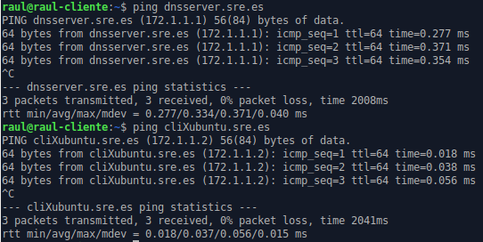

Pràctica 3.2 - Configuració de servidor DNS mestre i esclau
Atenció, molt important abans de començar!
✔ Heu de tenir un clon de l'Ubuntu Server, perquè faci de servidor DNS esclau
✔ Aquest servidor esclau tindrà una interfície a la nostra xarxa interna que rebrà la IP per DHCP així que:
- Aquesta interfície, estarà configurada per a la mateixa xarxa interna que el server original i haurà de tindre configurat en netplan que reba la IP per DHCP
✔ Heu de tenir configurat el servidor DHCP perquè assigni una dirección IP fixa a l'Ubuntu Server.
Avís
✔ Si ja havíeu clonat el servidor per fer les pràctiques de tema anterior, podeu reutilitzar-la però recordeu:
-
Aturar els serveis que tinguéssiu instal·lats (isc-dhcp-server, isc-dhcp-relay)
-
Cal desactivar-una de les interfícies en Virtualbox
-
La interfície de la xarxa interna estarà configurada per a la mateixa xarxa interna que el server original i haurà de tenir configurat en netplan que rebi la IP per DHCP
-
Instal·lar Bind i els paquets addicionals, tal com vam fer en la pràctica anterior al servidor original
Nota important
Si no ixen els resultats que deuen, pot passar que s'hagi quedat informació guardada en la caché del client o del server. Per esborrar-les en el client:
sudo systemd-resolve --flush-caches
I en el servidor:
sudo rndc flush
sudo rndc reload
Millora de la configuració del servidor
Pas 1 – Afegir subdomini automàticament
Si proveu, amb la configuració de la pràctica anterior cal incloure el subdomini al nom de host per poder fer ping i que el DNS resolgui bé les direccions.
Així no funciona:

Així hauria de funcionar:

Podem solucionar això. Hem d'enviar la nostra direcció de domini als hosts per que la afegeixin a la seva IP quan se la assigni el DHCP. Per això heu d'utilitzar, dins de la declaració de la vostra subnet a l'arxiu de configuració de l'DHCP, la directiva "option domain sre.es".
Pas 2 – Afegir el nostre servidor DNS com a únic en el client
Si us heu fixat en la sortida de dig o de nslookup des del client, quan us diu que servidor DNS ha utilitzat per a la consulta, us posa que ha estat el 127.0.0.53
Aquesta adreça és l'adreça local de la vostra màquina client. Això és així perquè systemd, el “nou” sistema de gestió de serveis de Linux, té una espècie de servidor DNS local que és el primer que es consulta i si no té la resposta, la reenvía al servidor DNS que hàgim configurat.
Això és una fallada coneguda de systemd i hi ha una espècie de “arranjament” per solucionar-ho i és crear un link simbòlic:
$ sudo rm -f /etc/resolv.conf
$ sudo ln -s /run/systemd/resolve/resolv.conf /etc/resolv.conf
sudo netplan apply
Tasca
Feu una nova consulta en dig i comproveu que ara sí ha utilitzat el servidor que deu, és a dir, l'Ubuntu Server que heu configurat vosaltres. Adjunteu captures de pantalla de la configuració i el resultat.
Pas 3 – Afegir forwarders
Tasca
Comproveu que si feu una consulta a una adreça de domini d'Internet (cisco.com, github.com…), el domini sí es resol perfectament. Com és això possible si només hem configurat les zones autoritativas del DNS i cap més?A quins servidors DNS creïs que consulta el nostre Bind?
Tasca
Descomenta en l'arxiu la secció de forwarders i afegeix les següents adreces.
forwarders {
208.67.222.222; //Servidor DNS d'Opendns
1.1.1.1; //Servidor DNS de Cloudflare
};
Tasca
Fes un dig a una adreça d'Internet una vegada més. Què creus que hem fet afegint aquestes adreces?
Tasca
Si en l'arxiu “named.conf.options” canvieu la línia “recursion yes;” per “recursion no;” * Segueix funcionant la resolució de subdominis externs d'Internet (comprova-ho amb dig o nslookup? * I els propis (comprova-ho amb dig i amb el nom de domini complet de les màquines .sre.es)? * Per què passa això si tenim els forwarders configurats?
Nota
Pot passar que no us funcionen de primeres. En aquest cas, i en el mateix arxiu, proveu a canviar la línia:
dnssec-validation auto;
dnssec-enable yes;
dnssec-validation yes;
Pas 4 - Afegir arxius de log
Històricament tots els serveis de Linux han tingut el que es coneixen com a arxius de logs. Aquests arxius contenen text i registren tota l'activitat del servei, és a dir, tot el que ocorre amb ell.
Avui dia això ho controla systemd i podem veure l'estat i l'activitat del servei amb el comando “suo journalctl -o nom_de el_servei”. No obstant això, anem a afegir els nostres propis arxius de logs per fer-ho més accessible i manejable.
Per a això, en l'arxiu “named.conf” li indiquem que ha de tenir en compte un nou arxiu de configuració que crearem després per especificar com guardar els logs:
include "/etc/bind/named.conf.logging";
logging {
channel errors_syslog {
syslog daemon;
severity warning;
};
// Per loggear totes les consultes DNS al servidor
channel queries_log {
file "/var/log/named/queries.log" versions 600 size 20m;
print-estafi yes;
print-category yes;
print-severity yes;
severity dynamic;
};
//Per loggear tots els errors en realitzar consultes al servidor
channel query-errors_log {
file "/var/log/named/query-errors.log" versions 5 size 20m;
print-estafi yes;
print-category yes;
print-severity yes;
severity dynamic;
};
//Definim les categories associades als channels
category llepa-servers { null; };
category edns-disabled { null; };
category resoldre { null; };
category dnssec { errors_syslog; };
category default { errors_syslog; default_debug; };
category unmatched { null; };
category queries { queries_log; };
category query-errors { query-errors_log; };
};
No obstant això, comproveu que aquest directori i aquests fitxers no existeixen.
- Creeu aquest directori amb aquests fitxers
- Després de fer-ho, heu de canviar la propietat de l'arxiu a l'usuari “bind”, que és el corresponent al servidor DNS:
sudo chown bind.bind nom_de_fitxer
Finalment, a la configuració de Bind cal dir-li que sigui capaç de registrar la informació relativa a les queries o consultes DNS. Per a això modifiquem l'arxiu d'opcions “named.conf.options” i afegim, dins de “options {...}” la línia:
querylog yes;
Tasca
Comprova que realitzant ara consultes des del client, queden registrades en aquest arxiu i fes una captura de pantalla.
Tasques a realitzar
Seguint els mateixos passos, introdueix en els arxius de zona al client clonat. Posa-li el nom XubuntuClon i comprova, de la mateixa manera, que també es resol bé el seu nom i és possible fer-li ping per nom.
Atenció per a l'informe
Documenta tota la pràctica amb les captures de pantalla corresponents de cada configuració i comprovació.